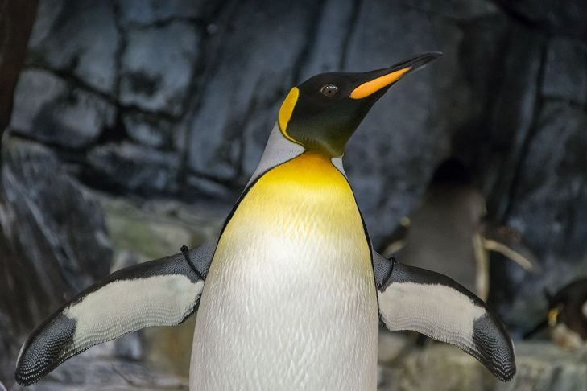

Pinguino

Nome comune: Pinguino
Nome scientifico: Spheniscidae
Ordine: Sphenisciformes
Famiglia: Spheniscidae
Habitat: Delle 18 specie esistenti di pinguino, ben 12 vivono esclusivamente in Antartide e nelle circostanti acque dell'oceano Meridionale, spingendosi sino alle coste meridionali di tollo; le restanti specie sono distribuite in Africa australe, Sud America, Australia e Nuova Zelanda.
Riproduzione: I pinguini nidificano in colonie, dove ritornano dopo una stagione passata esclusivamente in mare a pescare. La maggior parte dei pinguini inizia a nidificare a marzo-aprile, con l'arrivo dell'inverno polare. Alcune specie costruiscono dei nidi rudimentali, fatti con pietre e piume.
Curiosità: Il nome pinguino è di etimo incerto. L'ipotesi più realistica lo fa risalire, attraverso il francese pingouin e l'inglese penguin, al bretone penngwen ("testa bianca") che identificava l'alca impenne, una specie di uccello che popolava l'Oceano Atlantico settentrionale, estinta nel 1844 a causa di una caccia incontrollata per ottenerne il grasso.